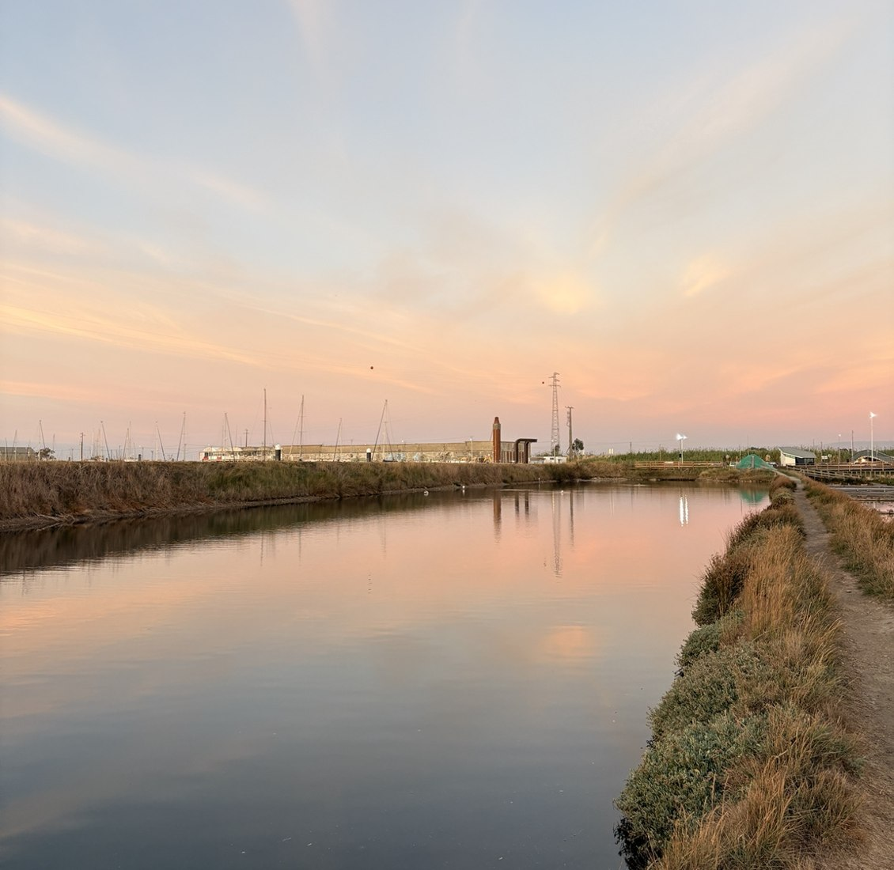

Wetlands & habitats
Tidal waters, salt-tolerant vegetation and shallow habitats form a sensitive ecological network.
For anyone who has watched the birds over the water, heard the reeds in the wind, or simply felt at home beside the Ria. This living place deserves to remain alive — for its own sake.
There are places you remember by their silence. The sound of water, the birds passing overhead, the grasses moving with the breeze. The Ria de Aveiro is one of them. It is not an empty space waiting for something to happen.
Plans to build beside this landscape concern me. This project began with one resident asking a simple question: why not protect what is already here, instead of always looking for something new to build?
This is an independent initiative by one Aveiro resident, not an organisation or a group campaign. It welcomes everyone who cares about the Ria. No breach of environmental law is claimed without evidence; unanswered questions are clearly identified.
The Ria is already home to countless lives. Birds rest and feed here. Plants take root in salty ground. The tides come and go. None of this needs to produce a profit, become an attraction, or serve a property development to have value.
The aim is not another landscaped park with more paths and lights. It is to ask whether nature can be left undisturbed — and, where human activity has caused damage, allowed to recover with as little interference as possible.
This conservation perspective guides the project. The precise protection status and habitats of each Antiga Lota parcel still need verification.
Antiga Lota is a former port and fish-market area at the edge of the Ria de Aveiro. A municipal redevelopment proposal, Parque das Marinhas, includes housing, hospitality, commerce and public spaces.
In 2024, the Portuguese government approved transferring approximately 118,000 m² to the municipality. Its financial terms anticipate future land-plot sales. The final development footprint and the environmental approval status still need verification.
Who benefits from building here? What would be lost? And was protecting or restoring the land without new housing ever considered seriously?

Water, mud, reeds, saltmarshes and birds are not empty scenery. Together they make a living world, shaped over centuries, with rhythms of its own. It deserves care simply because it exists.
Tidal waters, salt-tolerant vegetation and shallow habitats form a sensitive ecological network.

The wider protected Ria provides breeding, resting and feeding environments for different bird populations.

Salt production, fishing, port activity and coastal processes shaped the landscape we see today.

Important: a species recorded across the Ria is not automatically confirmed at Antiga Lota. The relationship to exact proposed works must be investigated.
I am asking the responsible authorities to take ecological risks seriously, share existing environmental assessments and examine an alternative without new residential development. Any required nature-protection checks should come before potentially irreversible changes.
The available information does not yet establish a legal violation or prove that every part of Antiga Lota lies within Natura 2000. Those questions need proper assessment.
The Ria de Aveiro did not begin as vacant land. Its channels and saltmarshes took shape over centuries through moving sand, rivers, tides and human activity. The coastal barrier developed from around the tenth century; in 1808, the present inlet was opened to the sea.
Fishing, salt production and navigation are part of this landscape's human history. But the history of the whole lagoon is not the same as the history of the Antiga Lota parcel. The latter includes former port and fish-market structures, and parts of the land have been altered by people. The exact history of individual plots is still being researched.
A Ria de Aveiro não começou como um terreno vazio. Os canais e sapais formaram-se ao longo de séculos, pela ação das areias, dos rios, das marés e das pessoas. O cordão litoral desenvolveu-se a partir de cerca do século X; em 1808 foi aberta a barra atual.
A pesca, as salinas e a navegação fazem parte da história humana da paisagem. Mas a história de toda a Ria não é a mesma que a história de cada parcela da Antiga Lota. Aqui existiram estruturas portuárias e da lota, e há terrenos transformados pela atividade humana. A história precisa de cada parcela continua em investigação.
Ria de Aveiro contains Natura 2000 sites designated for birds, habitats and other wildlife. The government's 2026 management plan sets conservation objectives. That matters even for a project outside a site's boundary if it could significantly affect protected features.
Birds use wetlands for resting, feeding and breeding, while tidal flats, salt-tolerant vegetation and aquatic life form connected ecosystems. A confirmed bird species in the wider Ria is not automatically a confirmed species on the proposed building plot. This project is seeking accurate maps and evidence, not guessing.
A Ria de Aveiro integra sítios da Rede Natura 2000 para a proteção de aves, habitats e outras espécies. O plano de gestão aprovado em 2026 estabelece objetivos de conservação. Estes também podem ser relevantes para projetos fora dos limites protegidos, se houver possíveis efeitos significativos.
As aves usam as zonas húmidas para descansar, alimentar-se e reproduzir-se; os lodos de maré, as plantas adaptadas ao sal e a vida aquática formam ecossistemas ligados entre si. Uma espécie registada na Ria não fica automaticamente confirmada na parcela prevista para construção. Este projeto procura mapas e provas, não suposições.
The record is clearer on formal decisions than on personal motives. Below are key events, with source links. The financial terms in 2024 anticipated future land sales; that is not evidence that those sales have already happened.
Os documentos esclarecem melhor as decisões formais do que as motivações pessoais. Seguem-se etapas importantes, com fontes. Em 2024, as condições financeiras previam futuras alienações de lotes; isso não prova que essas vendas já tenham ocorrido.
The 2024 resolution traces the site's inclusion in Polis from 1998 and its registration with Administração do Porto de Aveiro through Decree-Law 339/98 and Decree-Law 7/2008.
A resolução de 2024 refere a integração no Polis desde 1998 e o registo dos terrenos na Administração do Porto de Aveiro, com referência aos Decretos-Leis 339/98 e 7/2008.
Government resolution ↗Municipal competition won by Cátia Alexandre & Nuno Costa (dois arquitectos), with a €50,000 prize. An ideas competition is not a final building permit.
Concurso municipal ganho por Cátia Alexandre & Nuno Costa (dois arquitectos), com prémio de 50 000 €. Um concurso de ideias não é uma licença de construção.
Municipality's account ↗The 2024 resolution refers to agreed terms for possession and management. The underlying agreement has not yet been obtained here.
A resolução de 2024 refere um acordo sobre posse e gestão; o texto integral desse acordo ainda não foi obtido.
Resolution ↗118,000 m² • €6,716,675 + 5% interest • 30% of future auction receipts allocated to repayments. The resolution was adopted on 1 February, published 4 March, signed on behalf of the Prime Minister by Mariana Vieira da Silva. The scheme includes dates in 2029 and 2033; these are financial dates, not construction dates.
118 000 m² • 6 716 675 € + juros de 5% • 30% das receitas de futuras hastas públicas destinados a pagamentos. A resolução foi aprovada em 1 de fevereiro, publicada em 4 de março e assinada, pelo Primeiro-Ministro, por Mariana Vieira da Silva. As datas de 2029 e 2033 referem-se ao regime financeiro, não ao início das obras.
Original government decision ↗€730,976 awarded to Cátia Alexandre & Nuno Costa, Lda. by a decision of the then municipality president. This is a design contract, not evidence of final construction authorisation.
730 976 € adjudicados a Cátia Alexandre & Nuno Costa, Lda. por despacho do então presidente da Câmara. É um contrato de projeto, não prova de autorização final de construção.
Official municipal announcement ↗The conservation management plan took effect in March. Formal requests were sent to ICNF (21 October), Câmara (24 October), and Ministério Público (25 October). Their registration or examination is not yet confirmed.
O plano de gestão entrou em vigor em março. Foram enviadas comunicações ao ICNF (21 outubro), à Câmara (24 outubro) e ao Ministério Público (25 outubro). O registo ou apreciação ainda não está confirmado.
Conservation plan ↗Legislation addressed the former port land’s property status in the context of urban renewal.
A municipal ideas competition explored the redevelopment of Antiga Lota.
Resolution 34/2024 authorised transfer to the municipality and defined compensation tied in part to future land sales.
The municipality announced the award of a contract to prepare the subdivision project.
The Ria de Aveiro Natura 2000 management plan was approved; questions about development compatibility remain open.
Official documents wherever possible, with confirmed decisions clearly separated from open questions.
The published architectural concept is not presented here as a final construction permit. This preview is not a published government or NGO website.
Environmental questions and request for information submitted.
Documents and current status of the Antiga Lota project requested.
Preventive assessment of possible environmental risks requested.
If you love this water, these birds and this quiet landscape, this question concerns you. The Ria is not a luxury view for a few people, nor simply a place to make money. It is a living world with a value of its own.